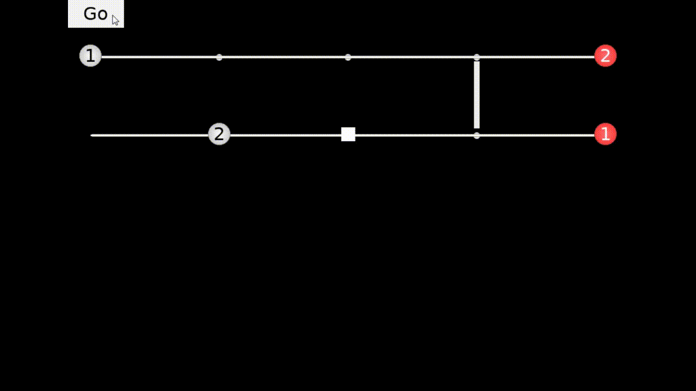

I graduated in 2022 with a Bachelor's in Computer Science from Binghamton University. I now work at Tesla, probably on cool top secret stuff. If I told you, I'd have to kill you. In my free time I'm super into programming language development and music, both of which you'll find dominate this personal-project-website.
A sane language on a similar abstraction level to C, that compiles to C and can (almost) seamlessly interact with C libraries, a-la Zig or Nim, but with a more functional lean. Written in Haskell. Remarkably unfinished.
# Only some of this code would currently compile.
# However, this is the general direction of the language.
@entry(main)
func fibonacci(n: int) -> int
do {
var iter := func(a: int, b: int, n: int) -> int
do if n == 0
then a
else iter(b, a, n - 1);
iter(0, 1, n)
}
func main() -> nothing
do {
print fibonacci(10);
}
Badge is a dynamically typed, interpreted functional programming language written in C++. It compiles to bytecode which is run on a virtual machine. At the moment, it only supports a limited set of features, but what it does have is well-tested and very stable.
@import[prelude].
func fib(n) {
func iter(a, b, n)
if n == 0
then a
else this(b, a + b, n - 1).
iter(0, 1, n)
}.
% Prints "55"
println(fib(10)).
Manetheren is, at the moment, a small 3D renderer written in C+. It draws a first person view of the level using old, classic raycasting techniques from games like Wolfenstein 3D and DOOM.

For the Ludum Dare 44, a biannual 48-hour game jam, I made a puzzle game about managing concurrency, titled "Your Life is Concurrency." The game is written in Go, using bindings to the SDL2 library.
Scrift is an album I recorded during the 2020 quarantine.
Sometimes I record covers of songs I like, for fun. Here's a couple.
Sometimes I also write little one-off songs that aren't part of any album. Here's a couple of those.